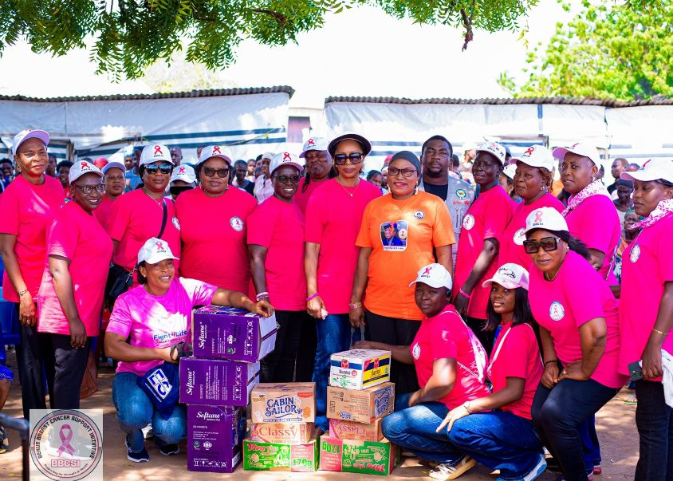
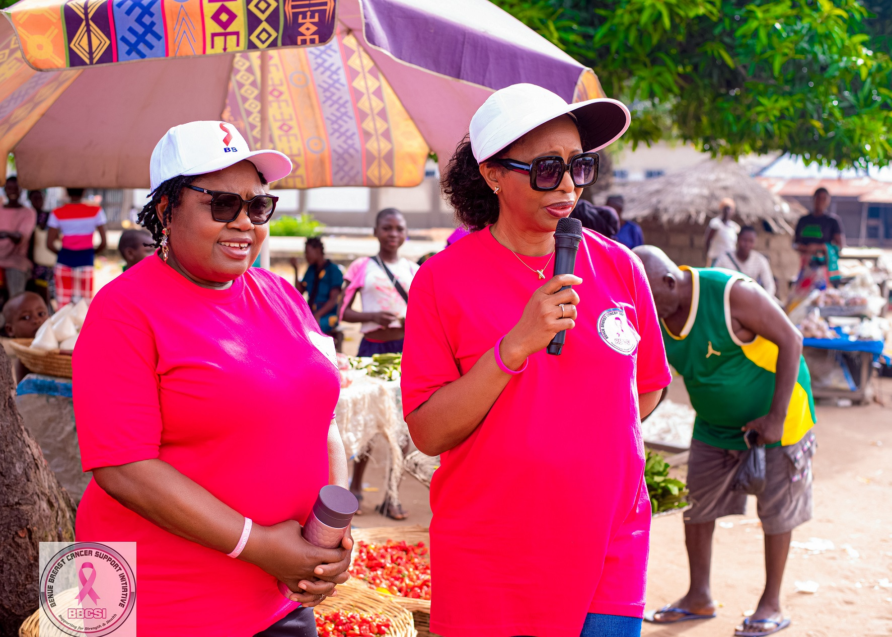
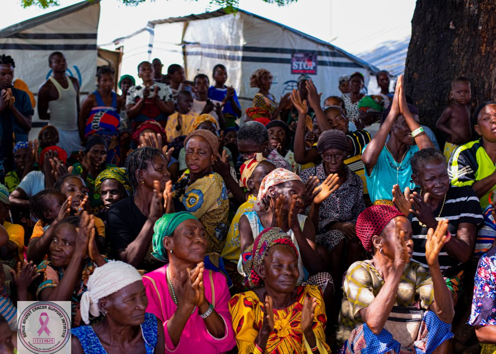
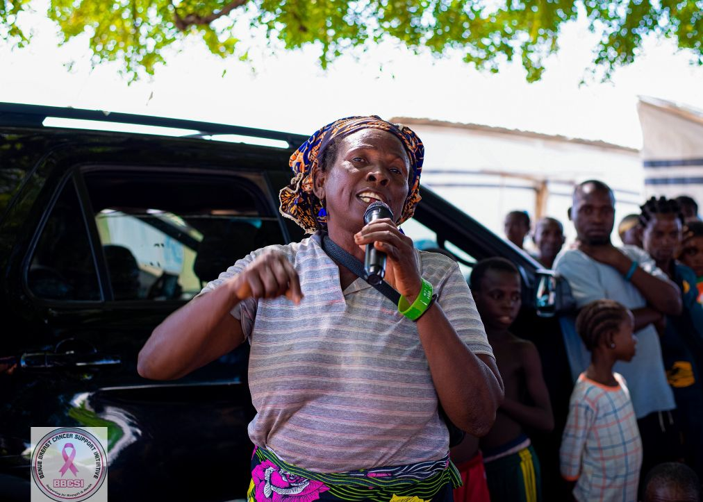

BBCSI Takes Breast Cancer Awareness and Humanitarian Support to Daudu 1 IDP Camp
·
BBCSI
Communications Team

In continuation of activities marking its 10th anniversary and in commemoration of Breast Cancer Awareness Month, the Benue Breast Cancer Support Initiative (BBCSI) took its advocacy and humanitarian outreach to Internally Displaced Persons (IDP) Camp in Daudu 1, Benue State. The visit was driven by a simple but important conviction: breast cancer awareness must reach every woman, regardless of her social circumstances, economic situation or place of residence.
For women living in displacement camps, access to health information and essential medical services can be particularly challenging. Recognising this reality, BBCSI considered it important to bring the breast cancer awareness message directly to the camp community.
Taking Breast Cancer Awareness to the Most Vulnerable
During the visit, BBCSI delegates spent time educating camp residents, particularly women, on breast health, the importance of breast self-awareness and the need to pay attention to unusual changes in their breasts. The sensitisation focused on helping women understand how to examine their breasts, recognise possible warning signs and take appropriate action when they notice a lump or any unusual breast change.
The women were encouraged:
- Not to ignore suspicious changes
- Not to panic unnecessarily
- Not to resort to self-medication
- To seek prompt medical evaluation from qualified healthcare professionals
The message was clear: early detection begins with awareness, and no woman should ignore a change in her breast. BBCSI emphasised that a breast lump does not automatically mean cancer, but every unexplained lump or suspicious change deserves proper medical attention.


Beyond Awareness: Extending a Helping Hand
The visit was not limited to health education. In keeping with the spirit of compassion and solidarity that has defined BBCSI’s work over the years, the organisation also brought provisions for the camp residents. The donated items were formally presented to camp officials for distribution and use by the residents.
This gesture reflected BBCSI’s recognition that meaningful community engagement must go beyond words. While the organisation remains committed to breast cancer advocacy, it also understands the importance of responding to the immediate needs of vulnerable populations whenever possible. For the displaced residents, the visit was an opportunity to receive both valuable health information and practical humanitarian support.

When Awareness Becomes Action: A Woman’s Journey to Further Investigation
Perhaps the most significant development arising from the Daudu 1 outreach occurred a few days after the visit. Following the sensitisation exercise, camp officials referred a 50-year-old woman to BBCSI after she presented with a lump in her left breast. This referral was a powerful indication of the importance of taking health education to grassroots communities. The information shared during the visit had created an opportunity for a woman with a concerning breast change to be brought to the attention of an organisation equipped to help her take the next step.
Rather than allowing the matter to end with a referral, BBCSI intervened by paying for her mammogram to facilitate further medical investigation. The woman is currently awaiting the results of her mammogram. While it is too early to determine the nature of the breast lump, BBCSI considers it important that the woman receives the necessary medical attention and follow-up.
Her case reinforces one of the most important messages behind the organisation’s decade-long advocacy: awareness is meaningful when it empowers people to seek help, and support is essential when they take that step.
One woman reached.
One referral made.
One mammogram funded.
One more opportunity for timely medical attention.
This is the kind of impact that makes grassroots breast cancer awareness so important.
No Woman Should Be Left Behind
The experience at Daudu 1 further strengthened BBCSI’s resolve to take breast cancer education to underserved and vulnerable populations. Women living in IDP camps deserve the same access to health information, early detection opportunities and compassionate support as women in more privileged environments. Their circumstances should never become a barrier to knowing about their health or seeking medical attention.
BBCSI believes that breast cancer awareness must be inclusive, accessible and continuous, reaching women in rural communities, schools, markets, workplaces and displacement camps.